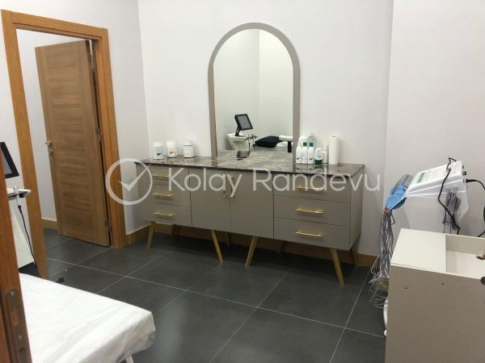
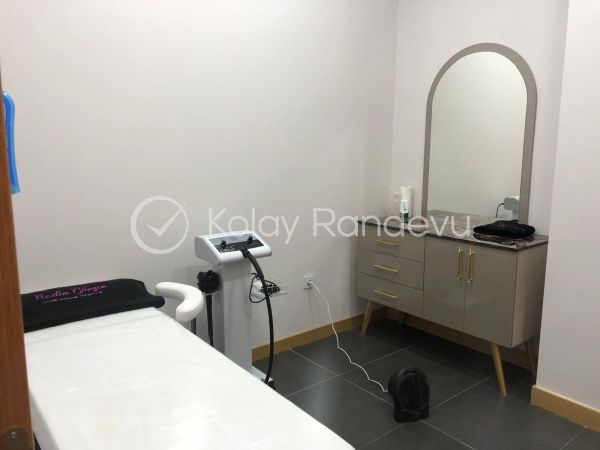
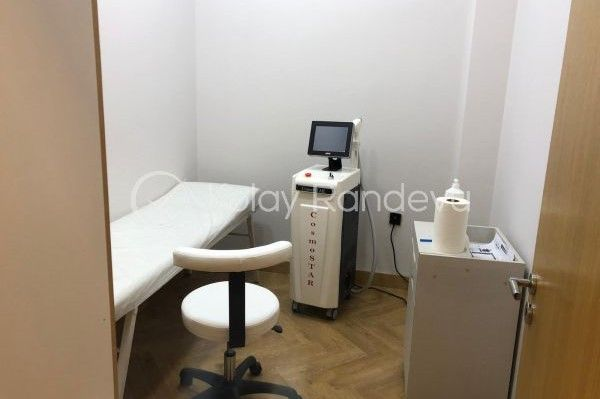
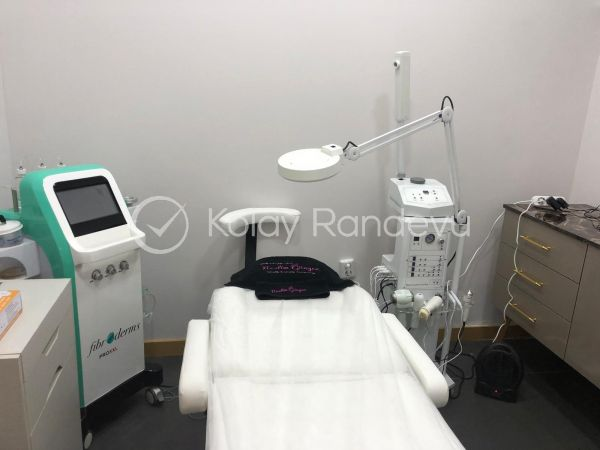
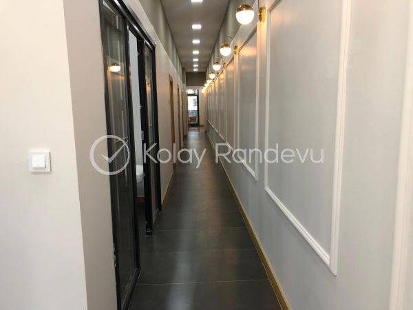
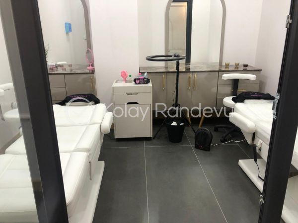
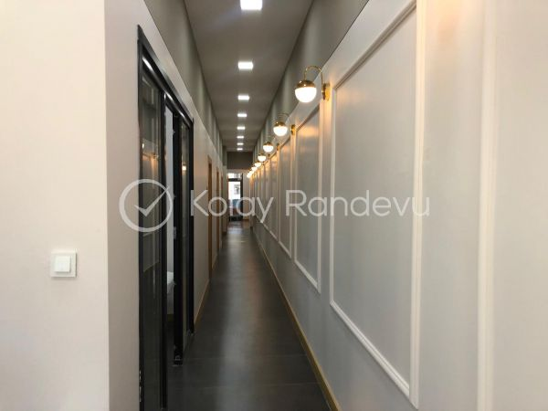
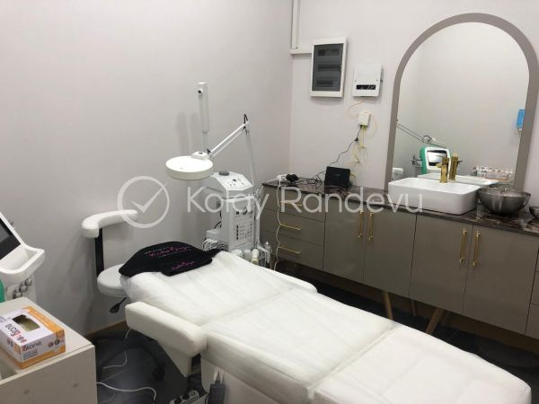
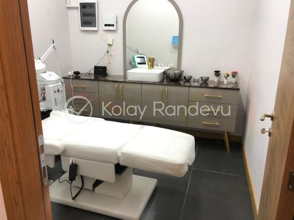

Karşılama
Marka, güven puanı ve randevu aksiyonu ilk ekranda netleşir.
Bursa Nilüfer / Güzellik ve Estetik Merkezi
Güzelliğin Sırrı
Lazer epilasyon, cilt bakımı, tırnak, makyaj, kaş-kirpik ve bölgesel bakım hizmetlerini tek bir premium klinik yolculuğunda birleştiren Nilüfer adresi.

Klinik Yolculuğu
Karşılama, hizmet seçimi, bakım odası ve randevu aksiyonu aynı görsel evrenin parçaları olarak ilerler. Hareketlerin tamamı klinik, cihaz, ayna, bakım yatağı ve gerçek mekan fotoğrafları etrafında kurgulandı.
Marka, güven puanı ve randevu aksiyonu ilk ekranda netleşir.
Hizmet kategorileri bakım sistemleri gibi birbirinden ayrılır.
Görseller, ziyaretçiyi bekleme alanından uygulama odalarına taşır.
Hizmet Haritası

01Klasik cilt bakımı, dermaroller, Cazmara maske ve ön görüşme.

02Yüz, kol, bacak, sırt, koltuk altı ve tüm vücut uygulamaları.

03İpek kirpik, lifting, laminasyon, boyama ve microblading.

04Manikür, pedikür, protez tırnak, kalıcı oje ve aksesuar.

05Profesyonel, gündelik, gece, gelin makyajı ve kalıcı uygulamalar.

06G5 masajı, lenf drenaj, ağda ve ön görüşme randevusu.
Mekan Kanıtı
Görseller yerel dosyalardan yüklenir. Düşük çözünürlük ve filigran riski, cam katmanlar ve kontrollü kadrajlarla daha premium bir sunuma çevrildi.


Güven Sinyalleri
KolayRandevu profilindeki 448 ziyaretçi puanı sinyali.
Hizmet deneyimine dair sosyal kanıt.
Instagram profilinde görünen takipçi sinyali.
Her gün 09:00-21:00 randevu akışı.
Randevu Finali
İhsaniye, Nilüfer / Bursa konumu, telefonlar, çalışma saatleri ve online randevu aksiyonu aynı final panelinde toplanır.